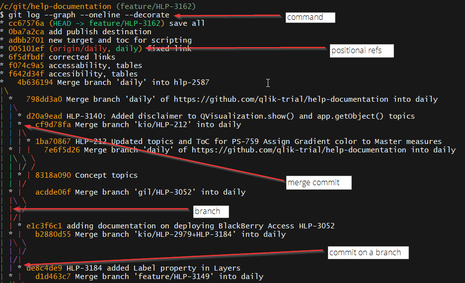

Git History¶
Use Git Bash to explore your git history.
The git graph¶
The git graph is the ASCII version of a git GUI, like Git Extensions.
Here are some important commands:
| command | argument | description |
|---|---|---|
git log |
-- | Prints out the commit history in a list. |
--graph |
Prints an ASCII graph | |
--decorate |
Shows the positional references: HEAD, branch | |
--oneline |
Formats log to single line |

Show a commit¶
Use Git Bash to explore the contents of a commit.
Here are some important commands:
| command | argument | description |
|---|---|---|
git show <something> |
-- | Prints out info about a commit |
<sha1> |
Show the commit referenced by the SHA1 | |
<branch> |
Shows the commit that the branch is pointing to | |
HEAD |
Shows the commit that the HEAD is pointing to |
In the image in the previous section, HEAD and feature/HLP-3162 and cc67576a all point to the same commit.
The following commands print the same results to the terminal:
git show HEAD #OR git show `feature/HLP-3162` #OR git show `cc67576a` commit cc67576a7142c77d3969666cf277ecdf741c8273 (HEAD -> feature/HLP-3162) Author: kyleweishaar <kyle.weishaar@qlik.com> Date: Tue Jul 3 11:59:56 2018 -0400 save all diff --git a/Project/Targets/Sense_Hub/dev_share_scripting.fltar b/Project/Targets/Sense_Hub/dev_share_scripting.fltar index 39644002..423cb586 100644 --- a/Project/Targets/Sense_Hub/dev_share_scripting.fltar +++ b/Project/Targets/Sense_Hub/dev_share_scripting.fltar @@ -5,10 +5,16 @@ Type="CleanXHTML" Destinations="" GlossaryTermConversion="marked" - MasterToc="/Project/TOCs/Sense_Hub/ScriptingModule.fltoc"> + MasterToc="/Project/TOCs/Sense_Hub/ScriptingModule.fltoc" + OutputFolder="C:\git\content-share"> <PrintedOutput CollapseMargins="true" GenerateTOCProxy="true" GenerateIndexProxy="true" GenerateGlossaryProxy="true" /> + <Destinations> + <Destination + Link="/Project/Destinations/git_hub.fldes" + Publish="true" /> + </Destinations> </CatapultTarget> \ No newline at end of file
Above, you can see the modified files and their changes that are associated with this commit.
How can we target a commit that is not the HEAD or a commit that is not pointed to by a branch?
You can use the sha1 number, but this can be annoying to find and copy.
You can also specify the distance from the HEAD. Say I want to target commit B, C or G.
HEAD||feature/HLP-3162 A cc67576a
|
B cd64321a
|
C ed69576a
/|
/ D kl67876a
0q60006a G |
E ll63576a
-
Target B =
git show HEAD~1ORgit show HEAD^Go to HEAD, and then go down 1 commit.
-
Target C =
git show HEAD~2ORgit show HEAD^^Go to HEAD, and then go down 2 commits.
-
Target G =
git show HEAD~2^2Go to HEAD, and then go down 2 commits, and then pick the second parent of that commit.
Find the source of each line¶
Blame is a git command that shows you the line-by-line additions to a file.
Here are some important commands:
| command | argument | description |
|---|---|---|
git blame <something> |
-- | Prints out info about a commit |
<path/to/file> |
Shows the file line-by-line. |
/c/git/git-site (master) $ git blame mkdocs.yml ... ^bc3dcf1 (kyleweishaar 2018-06-19 14:39:49 -0400 17) markdown_extensions: ^bc3dcf1 (kyleweishaar 2018-06-19 14:39:49 -0400 18) - admonition ^bc3dcf1 (kyleweishaar 2018-06-19 14:39:49 -0400 21) - pymdownx.superfences 699f4be6 (kyleweishaar 2018-06-19 15:26:03 -0400 22) - toc: 699f4be6 (kyleweishaar 2018-06-19 15:26:03 -0400 23) permalink: true ... ^bc3dcf1 (kyleweishaar 2018-06-19 14:39:49 -0400 26) - Moving to Git: index.md ... cdfac27b (kyleweishaar 2018-07-06 09:03:20 -0400 31) - Install Meld: meld.md ^bc3dcf1 (kyleweishaar 2018-06-19 14:39:49 -0400 32) - Learn the Basics:
In the terminal, I can see the lines enumerated on the right, the SHA1 on the left, and in between, the author of the change the modification.
The ^ beside the SHA1 indicates that the line was added at the first first. SHA1 numbers without the ^ means they were added later.
Comparing commits¶
Use git diff to compare two commits.
Here are some important commands:
| command | argument | description |
|---|---|---|
git diff HEAD HEAD~2 |
-- | Prints out the diff between the current commit and the commit 2 commits below the HEAD. |
git diff <branch> <branch1> |
-- | Prints out the diff between tips of two branches. |
Example¶
Want to know if you need to rebase?
The following command returned all of the commits that are on daily but not on my bug/hlp-3288 branch.
/c/git/help-documentation (bug/hlp-3288)
$ git log bug/hlp-3288..daily --oneline
32463c3c (origin/daily, daily) Merge branch 'cleanup2/Dan' into daily
a741f376 Fix another capitalization issue plus change "which" to "that"
7c33c9a5 Merge branch 'cleanup2/Dan' into daily
8699c385 Fix "id" capitalization issues
08ddae9a Merge branch 'kio/feature/HLP-3113' into daily
2aae7670 Added FT and edited documents for updcoming Insight Advisor features
39ec0c36 Merge branch 'improvement/hlp-2792' into daily
d1091761 Merge branch 'epic/HLP-2326' into daily
8fcb8ada Updated resource filter topic
7f901344 added Ruggero's comments and prepared for tech+peer review
2999a89a Merge branch 'improvement/hlp-2792' into daily
14897a4d Fixed links (?)
f2e38ea0 Merge branch 'hlp-3316' into daily
c602b467 accessibility, links tables and images
725638e5 Merge branch 'improvement/hlp-2792' into daily
0631b375 Fixed broken links in certificates topics.
57378fbb Merge branch 'QABDI_rnt' into daily
c2f16ee8 Adding SSH to deployment
baf94433 Merge branch 'cleanup2/Dan' into daily
166d5956 Delete unused <ul> tag
59f86cc0 Clean up capitalization and incomplete steps
824b7199 Merge branch 'improvement/hlp-2792' into daily
571d0ae3 HLP-2792 (certificates)
6be876ef Merge branch 'hlp-2587' into daily
If I rebased daily onto my bug branch then these are the commits that I will get.
More on git log¶
Here are some important commands:
| command | argument | description |
|---|---|---|
git log |
-- | Prints out the commit history in a list. |
--patch |
Prints a detailed diff for each commit in the log. | |
--grep <string> |
Filters the log to show only commits that contain the string | |
-n |
Shows the log for n commits back. |